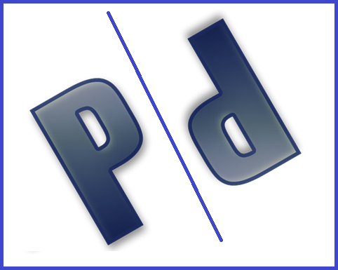

<mat-toolbar color="primary">
    <mat-toolbar-row>
        
        <p>Pollod</p>
        <button mat-button *ngIf="!login" routerLink="/" routerLinkActive="active" [routerLinkActiveOptions]="{ exact: true }">Home</button>
        <button mat-button *ngIf="!login" routerLink="/login" routerLinkActive="active" [routerLinkActiveOptions]="{ exact: true }">Inloggen</button>
        <button mat-button *ngIf="!login" routerLink="/registratie" routerLinkActive="active" [routerLinkActiveOptions]="{ exact: true }">Registreren</button>  
        <button mat-button *ngIf="login" routerLink="/dashboard" routerLinkActive="active" [routerLinkActiveOptions]="{ exact: true }">Dashboard</button>
        <button mat-button *ngIf="login" routerLink="/pollmaken" routerLinkActive="active" [routerLinkActiveOptions]="{ exact: true }">Poll maken</button>
        <button mat-button *ngIf="login" routerLink="/addvriend" routerLinkActive="active" [routerLinkActiveOptions]="{ exact: true }">Vrienden uitnodigen</button>
        <button mat-button *ngIf="login" routerLink="/vrienden" routerLinkActive="active" [routerLinkActiveOptions]="{ exact: true }">Vriendenlijst</button>
        <button mat-button *ngIf="login" (click)="uitloggen()">Uitloggen</button>  
    </mat-toolbar-row>
</mat-toolbar>
<router-outlet></router-outlet>

